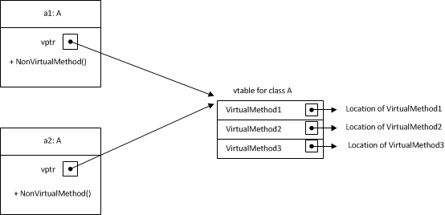
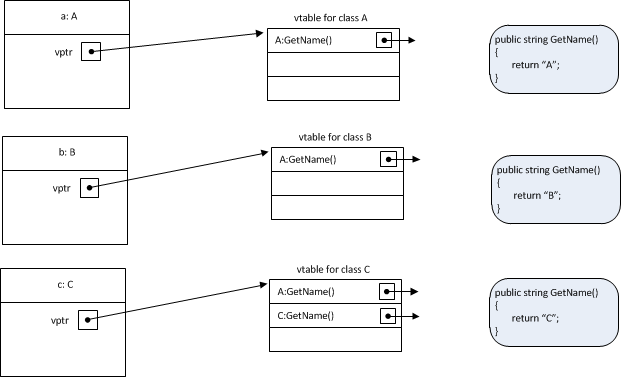
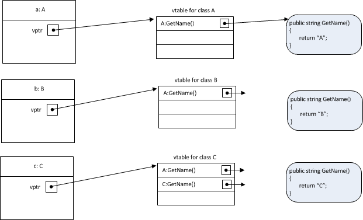
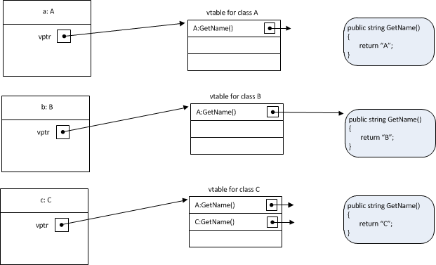
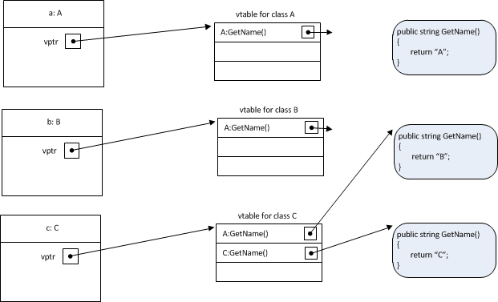
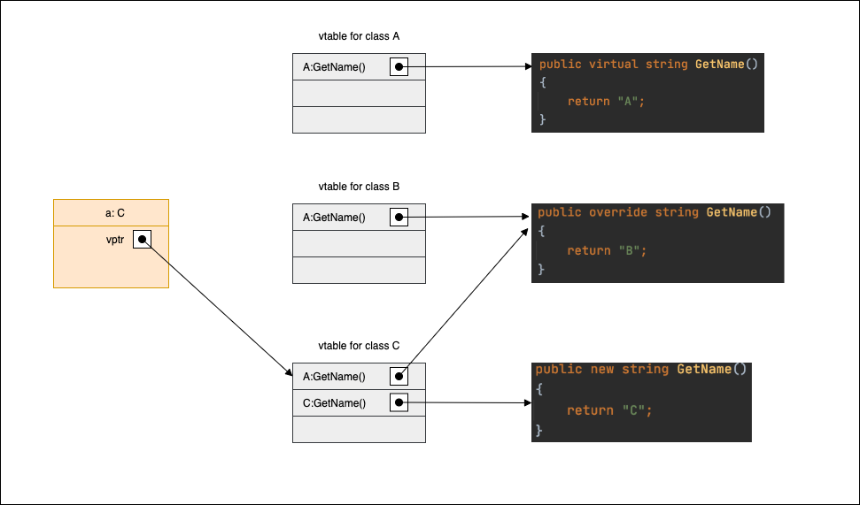

Overview
This is a fundamental concept in C# but I find it difficult to find explanation that really goes into details of how it’s implemented in C#, so I decided to write a post to document what I understand about this.
In C#, base class can use virtual modifier for a method to indicate that that method can be overridden by sub class. Different from Java, C# doesn’t enable method overriding by default, so the base class must use this modifier to allow base class method to be overridden. With virtual modifier in base class, child class can use either new modifier or override modifier to hide or override the inherited method from base class.
Under the hood, C# uses virtual method table (vtable, dispatch table) to determine at run time which method from which class in the hierarchy to call. Each class that has at least one virtual method will have its own vtable. When created, every object instance of that class will have a pointer to vtable of the class (the pointer will always be at a fixed address from beginning of object address, so the runtime always knows where to find the vtable). That means all object instances of the same class will share the same vtable. It can be visualized like this:

In the diagram, a1 and a2 are 2 object instances of class A, both of them have a virtual method table pointer (vptr) to point to the same vtable of class A. vtable only contains entries for virtual methods declared in the class.
Example
To understand behaviour of new and override modifiers with vtable, it’s easier to use an example:
- Let’s say we have 3 classes:
A,BandC. CinheritsBandBinheritsABoverrides methodGetName()fromA,Chides methodGetName()fromB
|
|
What happened at compile time and runtime?
At compile time, the structure of classes and their vtable might look like this:

Class A has one virtual method, so it has one vtable that contains an entry for that method. We identify that by A:GetName().
Class B inherits from class A, so it also inherits the entries in class A’s vtable, which is A:GetName(). The modifier override in class B GetName() declaration will overwrite entry A:GetName() that it inherits to point to its own implementation.
Class C inherits from class B, so it also inherts the entries from class B’s vtable, which is A:GetName(). But in addition, class C says it wants to have a new entry for GetName() by specifying modifier new in GetName() declaration. The effect of that is in vtable of class C, beside the inherted A:GetName() from class B, it has its own entry for C:GetName(). This new entry C:GetName() points to its own implementation of GetName() while original entry A:GetName() points to the implementation that it inherits (from class B)
Now let’s come to the interesting part: at runtime, how it determines which method to call using vtable? We will consider 6 cases of declaring and instantiating instances of A, B and C.
Case 1: A a = new A()
|
|
We declare a variable of type A. Actual object instance is also of type A. So vptr of the variable a points to vtable of class A. When a.GetName() is called, it just follows the pointer to look into class A vtable and finds the implementation of GetName() from class A.

Case 2: B b = new B()
|
|
Similar to case 1 above, vptr of the variable b points to vtable of class B. When GetName() is called, it uses class B implementation of GetName()

Case 3: C c = new C()
|
|
In this case, vptr of the variable c points to vtable of class C. But one thing that is different is that in vtable of class C, we have 2 entries for GetName() and C:GetName() effectively hides A:GetName() when referenced through C variable. So C implementation of GetName() is the one actually called.

Case 4: A a = new B()
|
|
We have a variable of type A that holds reference to an object of type B. This means vptr of variable a points to class B vtable
Case 5: A a = new C()
|
|
We have a variable of type A that holds reference to an object of type C. This means vptr of variable a points to class C vtable. But notice that since we only have variable of type A, it doesn’t know about the new entry C:GetName() in class C vtable and uses A:GetName() instead. As mentioned above, A:GetName() is pointing to class B implementation.

Case 6: B b = new C()
|
|
Similar to case 5 above, vptr points to class C vtable and it also uses A:GetName() entry in vtable.
And that’s it. I hope we have a better visualization of what’s going on behind the screen when virtual, new and override are used now.